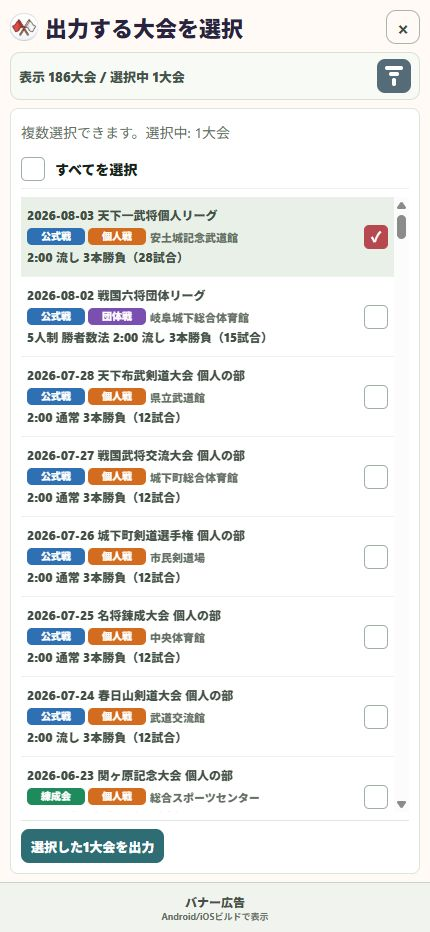

10 / 受け渡す
記録した試合データを相手へ渡す
離れた会場で分担して記録した試合を、あとで一つにまとめられます。
操作の入口ツール → 試合データの取込・出力 → 出力
出力を開く
「試合データの取込・出力」のメニューから「出力」を選びます。
渡したい大会を選ぶ
対象の大会をチェックします。複数の大会も選択できます。件数と日付を確認します。
出力へ進む
「選択した○大会を出力」を押して出力内容へ進み、「共有」を押します。ポイント利用の確認が出たら内容を確認します。
LINEなどで渡す
端末の共有画面で送信先を選びます。相手には「剣道スコアの試合データ」と伝えておくと分かりやすくなります。

